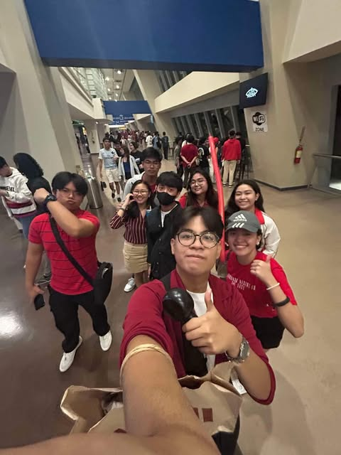
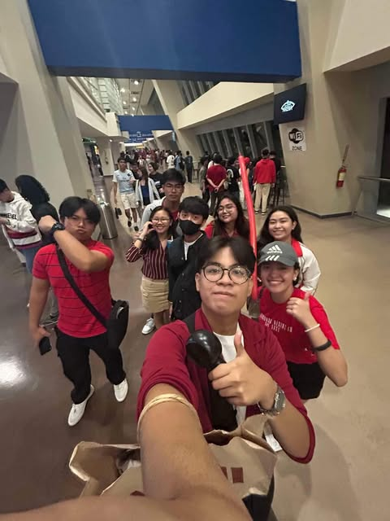

Rhythm in Every Step
Jenilyn Chua
Biography
Childhood Years: The Wonder of Firsts
Have you ever noticed how life moves to its own rhythm, sometimes fast and exhilarating, other times slow and uncertain? 1
Looking back at my childhood, my rhythm was fast paced, lively, and filled with the beat of drums, the melody of lyres, and the energy of performances. 2
I was the kind of kid who could not sit still, always signing up for anything that caught my interest. 3
In elementary school, I threw myself into every club, organization, and competition that I could find. 4
The Drum and Lyre Corps became my second home. 5
I was a colorguard, a lyrist, and later, a drummer. 6
Every practice session was filled with aching shoulders, sweat, and the thrill of perfecting every beat. 7
All that hard work paid off when I was awarded Best Drummer and Best Lyrist upon graduating. 8
But music was not my only passion, I also spent years as a Girl Scout, where I discovered my love for performing. 9
I joined dance competitions and was a familiar face at school events like Foundation Days and Teacher’s Day, always ready to step onto the stage. 10
One of the most meaningful experiences I had was as a peer educator, where I visited different public schools to teach students about bullying. 11
In turn, I learned so much from them, their struggles and their hopes for a kinder school environment. 12
My rhythm did not stop at music and performance. 13
Sports played a huge role in my childhood, too. 14
Badminton was my favorite sport, and I was lucky enough to represent my school in competitions. 15
Stepping onto the court, racket in hand, it was exciting. 16
Competing against players from different schools was both nerve-wracking and thrilling, and nothing compared to the feeling of playing my best, especially with my friends cheering me on from the sidelines. 17
But as much as I loved the sport, winning was not always guaranteed. 18
I fought hard, but I eventually lost and was not able to qualify for “Palarong Pambansa”. 19
Despite all of these busy schedules, I was not the "gala" type of kid that just wandered aimlessly. 20
I mostly stuck to a routine of home, school, then home, unless it was related to my extracurricular. 21
Balancing my academics and extracurriculars was exhausting, especially with the pressure of living up to my mother’s high expectations, but I always made sure to stay in the Top 10 of my class. 22
Early mornings of studying, sacrificing playtime, and pushing myself way beyond my limits were the price I had to pay, but I knew it was worth it. 23
Despite the struggles, my childhood was special. 24
It was during this time that I traveled abroad for the first time, visiting Hong Kong and San Francisco, California. I still remember the overwhelming excitement of stepping into a new country, the bright lights of Disneyland, and the euphoric feeling as I stood in a place so different from home. 25
It was an unforgettable experience that made me dream of seeing more of the world one day in the future. 26
Teenage Years: Finding Harmony in Chaos
Teenage years are supposed to be about discovering yourself, but for me, my rhythm began to change. 1
It became slower, more deliberate, as I started making tougher choices. 2
I had always loved performing, but I knew that if I joined another club in high school, I might lose control of my priorities again. 3
When my high school formed its very first Drum and Lyre Corps, I could not resist the chance to be part of it. 4
As a lyrist once again, it felt like stepping back into a familiar world. 5
Every performance brought a surge of nostalgia. 6
It brought back the same rush I felt in elementary school, but this time, something was different. 7
As much as I loved it, the constant practices started to take a toll. 8
Members were frequently excused from classes, and I found myself missing important lectures. 9
At first, I convinced myself that I could balance both just as I did in elementary. 10
But as time passed, the stress of catching up became overwhelming. 11
The joy of playing was slowly overshadowed by the stress of keeping up with my studies. 12
After a year, I made the decision to quit. 13
So, for the first time, I stepped away from extracurriculars and really focused on my academics. 14
It was actually a difficult decision, especially when I discovered my school’s drama club. 15
A part of me wanted to feel to be on stage again, but I reminded myself why I had to let go. 16
Then, before I could even fully adjust to high school life, the pandemic happened. 17
One moment, I was laughing with my friends in class, and the next, I was stuck in my room, staring at a Google Meet screen for hours. 18
The transition from face-to-face learning to online classes was brutal. 19
The days blurred together, and no matter how much time passed, it felt like I was just stuck in the same place. 20
The same four walls, the same routine, the same feeling of uncertainty. 21
I was not just exhausted, I was afraid of failing. 22
I wanted my family to be proud of me and to finally stop the comparisons that had followed me for years. 23
I carried the weight of expectations on my shoulders. 24
Even when I was breaking inside, I hid my exhaustion because I did not want them to see me like this. 25
And then, life threw something even heavier at me. 26
My mom was diagnosed with Stage 3 Cervical Cancer. 27
It was the kind of news you think only happens in movies, something you never expect to hear in your own home. 28
I was not prepared, none of us were. 29
There were sleepless nights, silent prayers, and days when I felt completely helpless. 30
The sight of my mother, strong, unwavering, yet very fragile, broke my heart in ways I could not explain. 31
But through it all, we never gave up. 32
We held onto faith, supported her through every appointment and therapy session, and fought alongside her. 33
That experience changed me. 34
It made me realize that pain is inevitable, but it does not define us. 35
College Years: Tuning into the Future
Now, as a college student, I am composing a new melody for my life. 1
One that is filled with both challenges and discoveries. 2
I chose Bachelor of Science in Information Technology (BSIT) in the University of the East not just because it is in demand, but because I have always been curious about technology and how it shapes the world. 3
The idea of creating something from scratch, solving problems, and being part of something this big fascinated me. 4
College was a culture shock, it felt so different from high school. 5
At first I was really not sure I would be able to keep up. 6 The fast paced environment, the heavy workload, and the expectations felt really overwhelming. 7
But I slowly adjusted, and along the way, I met amazing friends, people who understood me, supported me, and made me feel at home. 8
They became my support system, my reminders that I am not alone in this journey. 9
My first year was an eye-opener. 10
IT was far more complex than I had imagined. 11
The assignments, projects, and coding exercises pushed me beyond my limits, but at the same time, I genuinely felt a sense of accomplishment every time I learned something new. 12
The feeling of solving a problem after hours of frustration, finally understanding how to write a working code that seemed impossible at first, made everything felt really worth it. 13
Despite the challenges in learning how to program and keep up with the demands of my course, I am incredibly grateful to have attained a scholarship. 14
More than anything, I wanted one so badly, not just because it would make me happy or make my parents proud, but because it meant easing even just a little of the financial burden on my family. 15
Tuition fees were no joke, and knowing that I could somehow lessen that weight on my parents made all my hard work even more meaningful. 16
But it was not just academics that challenged me. 17
One of the harshest realities I faced throughout the years, from elementary to college, is that not everyone who calls themselves a friend will actually stand by your side when things get tough. 18
In the beginning, college felt like a fresh start, a chance to meet new people, form meaningful connections, and build friendships that would last a lifetime. And for a while, it seemed like that. 19
Late night study sessions, shared struggles over difficult assignments, and endless laughter made it feel like these friendships would really last. 20
But just like in the past, reality had a way of revealing the truth. 21
Group projects tested patience, deadlines exposed true work ethics, and difficult moments showed who was willing to stay and who was only there when things were easy. 22
Some friends slowly became distant, messages were left unanswered, and moments of support were met with silence. 23
It hurt, realizing that people who once felt like family could disappear without warning. 24
But despite everything, I kept going. 25
Now in my second year, I can somehow say that I have found my rhythm. 26
College is tough, life is unpredictable, and the future is uncertain, but I have learned to take things one step at a time. 27
No matter what happens, I will keep growing, keep learning, and keep chasing after the future I want to build for myself. 28


 
